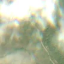
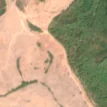

4,5 ha de pădure schimbată lângă Bolda
Între 10 mai 2026 și 26 iunie 2026, pe aproximativ 4,5 ha de pădure din comuna Socond, lângă Bolda, județul Satu Mare, imaginile Sentinel-2 arată că vegetația a dispărut sau s-a schimbat puternic. E o schimbare care merită verificată.
Autorizația de tăiere
de confirmat pe poze
N-am găsit o autorizație care să acopere zona, dar nu putem spune ce s-a întâmplat aici: analistul AI fie n-a văzut încă pozele, fie le-a văzut și nu e sigur. Nu dăm roșu pe o bănuială, și nici nu spunem că e în regulă. Analistul înclină spre altceva decât o tăiere, dar nu e sigur. Printre astfel de zone au fost și tăieri reale.
Ce se vede în poze: În poza detaliată, zona marcată arată ca o pajiște cu tufișuri și puțini arbori tineri, nu ca o pădure deasă; pădurea compactă este mai departe, în dreapta potecii. După, tot terenul deschis a devenit gol și deschis la culoare, în timp ce pădurea din jur a rămas verde, deci pare un teren de pășune curățat sau scarificat, nu o tăiere rasă într-o pădure închisă.


Înainte și după: Copernicus Sentinel-2, 10 m pe pixel, conturul zonei cu portocaliu. Poza detaliată (Esri World Imagery) e de acum 1–4 ani: arată ce era acolo înainte, nu tăierea.
Pe scurt
- Identificator
- 20260626_47532_22954
- Locul
- Bolda, comuna Socond, județul Satu Mare (SIRUTA 138869)
- Coordonate (centru)
- 47.53249, 22.95462 · Google Maps · OpenStreetMap
- Suprafața
- 4,5 ha (din pixeli de 10 m; ± câțiva pixeli pe margine)
- Ultima imagine cu pădurea întreagă
- 10 mai 2026
- Prima imagine cu schimbarea
- 26 iunie 2026
- Imagini în care se vede schimbarea
- 11
- Cât de sigur e semnalul din satelit
- ridicată
- Terenul
- în afara amenajamentelor silvice publicate (pășune, mal de apă sau pădure privată fără amenajament în registru)
- Garda Forestieră
- Oradea
Dacă vrei să verifici sau să sesizezi
- Pădurile din județul Satu Mare sunt în grija Gărzii Forestiere Oradea, care controlează tăierile și dă amenzile.
- Formularul Gărzii Forestiere Naționale primește sesizări și fără nume. Trimite linkul acestei pagini, coordonatele și pozele. Dacă tăierea e în desfășurare, sună la 112.
- Autorizațiile și transporturile de lemn se pot căuta în Inspectorul Pădurii.
Pagina arată ce se vede din satelit și ce scrie în registrul public; nu e o dovadă în sine.
Din alte surse
- presă (probabilă): Știre despre tăieri la Bolda, Satu Mare, 11.10.2026: „Foto. Sărbătoare la Bolda. Episcopul Timotei Sătmăreanul a târnosit biserica de lemn veche de aproape 240 de ani - Dincolo de sport” Nu e sigur că e vorba de aceeași tăiere. sursa
Cum citezi zona
Linkul acestei pagini nu se schimbă. Dacă zona iese vreodată de pe hartă, pagina rămâne, cu data și cu ce știam despre ea.
Pădurea RO, zona 20260626_47532_22954: 4,5 ha, Bolda, comuna Socond, județul Satu Mare; schimbare văzută din satelit între 10 mai 2026 și 26 iunie 2026. https://iliemihai.github.io/padurea-ro/zona/20260626_47532_22954/ (consultat la [data]). Date: CC BY 4.0.
Datele zonei: GeoJSON · toate zonele: date deschise · licența CC BY 4.0.
Istoricul zonei pe hartă
Starea se poate schimba când registrul publică o autorizație sau când analistul vede poze mai bune. O ținem aici, ca un link citat să arate și ce spuneam atunci.
Pe hartă cel târziu din 5 noiembrie 2026.
- 5 noiembrie 2026 – azi · de confirmat pe poze
Detalii tehnice, pentru verificare
De ce acest nivel de încredere:
- văzută schimbată în 11 imagini diferite
- peste 3 ha
- pădurea din jur e neschimbată
- ultima imagine cu zona intactă e cu 47 de zile înainte, deci nu știm bine când s-a schimbat
- AI-ul vede pădure dispărută
Ce a văzut analistul cu context: Poza detaliată din 2023 arată o textură pestriță (iarbă, arbuști, vegetație tânără) în interiorul conturului și pădure de conifere densă doar la est de potecă. În imaginea «după», o suprafață mare, de culoare roz-deschis, acoperă tot versantul deschis și se oprește brusc la marginea pădurii verzi. Coronamentul din 2000 de 2%, pajiștea de 56% în jur și lipsa autorizațiilor într-o rază de 5 km sunt în favoarea unui teren neforestier, dar acoperirea de 90% copaci din WorldCover și zona neclară dintre vegetația tânără și pășune lasă loc de incertitudine.
- Placa Sentinel-2
- 34TFT
- NDVI de referință
- 0.78
- NBR de referință
- 0.52
- Scăderea în pădurea din jur
- 0.03
- Persistență
- 0.98
- NDVI / NBR după
- 0.425 / 0.161
- Analistul de zi (model)
- taiere · 0.9 · claude-haiku-5-5
- Analistul cu context (model)
- pasune · 0.45
Cum se calculează fiecare: metodologia.
Pune harta zonei într-un articol
Copiază codul în articol (merge în majoritatea site-urilor de știri). Sau pune doar linkul: WhatsApp, Facebook și X arată singure poza zonei.